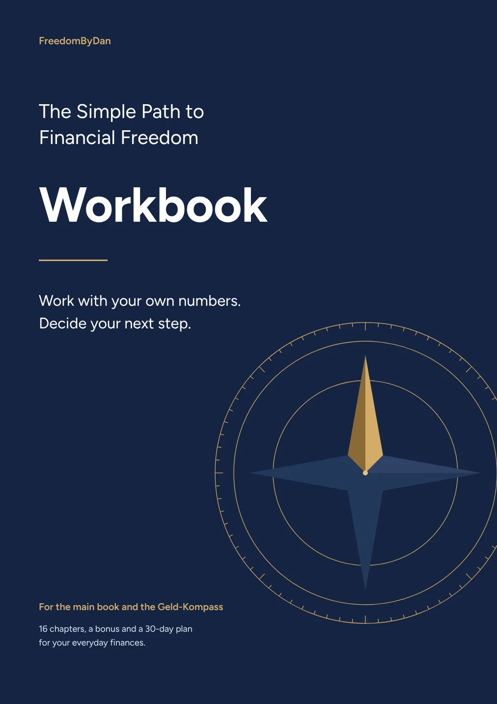
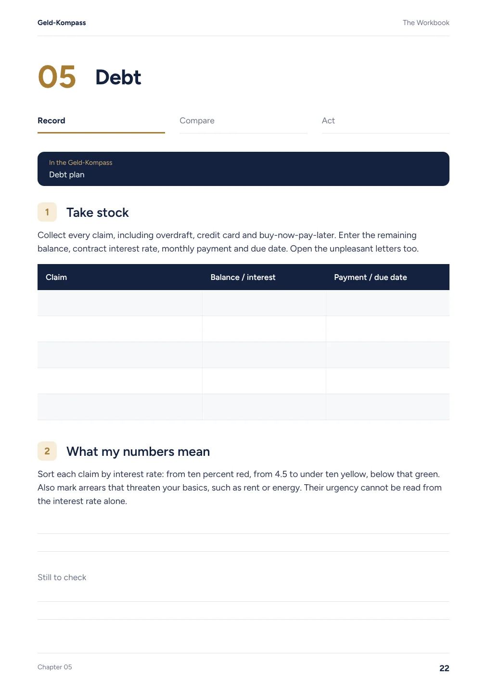
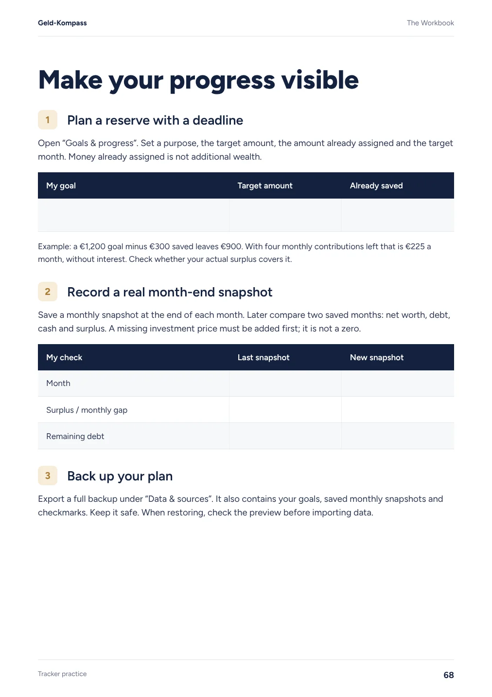
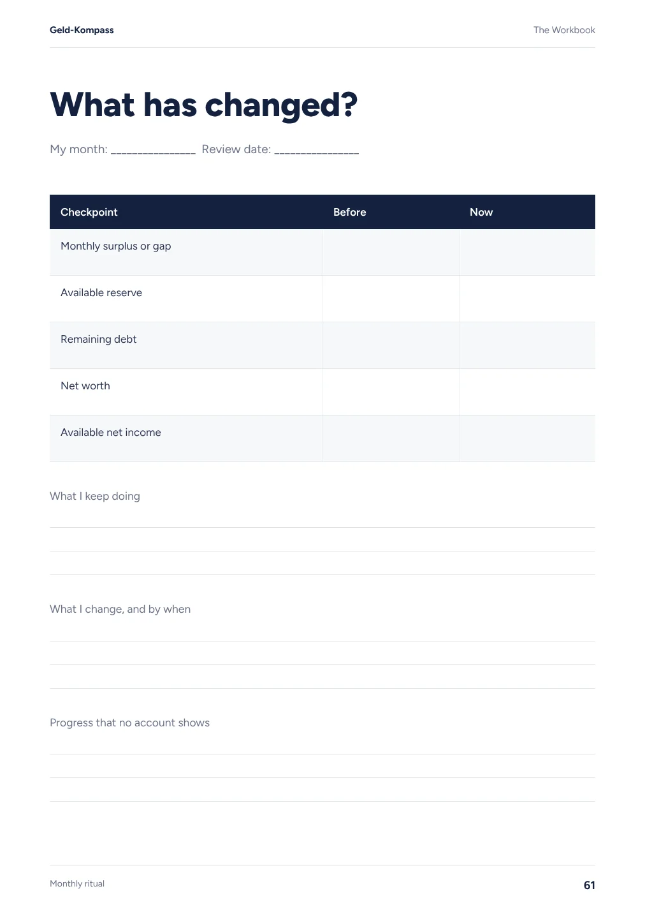

The workbook for the main book
Your numbers. Your decisions. Your next step.
The main book explains how money works. The workbook guides you through your own situation: record, compare and act.
69 pages of exercises for all 16 chapters and the bonus chapter, tracker practice, a monthly review and a 30-day starter plan.
See sample pages
€9.99 one-time · digital workbook
69 pages · PDF to print or annotate in a note-taking app
Preview · page 22
See all of your debt.
Credit card, overdraft, buy now pay later: the first exercise helps you gather every claim and due date. Urgent arrears are recorded separately from the pure interest order.
Collect your claims, then choose only an extra payment your month can really carry.
Do it in the free Compass
Preview · page 68
A reserve that fits your month.
A goal needs an amount, a deadline and an affordable monthly contribution. This page links the plan to your own monthly snapshots and a backup of your entries.
Create a goal in the Compass. Then note how much is still missing and when you will review the plan.
Do it in the free Compass
Preview · page 61
Numbers become a decision.
Compare surplus, reserve, debt and net worth. Write down what you keep and what you want to change by the next month-end review.
Update your balances first. Compare two real monthly snapshots and decide on one next step.
Do it in the free Compass
Understand, calculate, decide.
The main book gives you the thinking behind your plan. The free Geld-Kompass calculates with your numbers. In the workbook you record assumptions, decisions and next steps.
You can print the PDF or annotate it in a suitable note-taking app. It has no fillable form fields. The main book and personal advice are not included.
View three sample pages as PDF